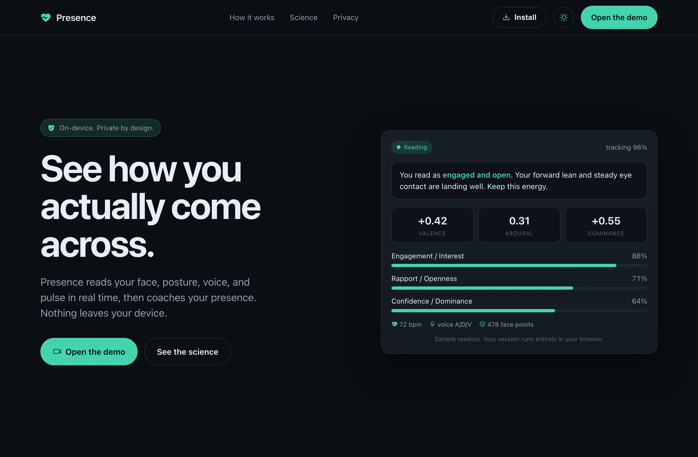
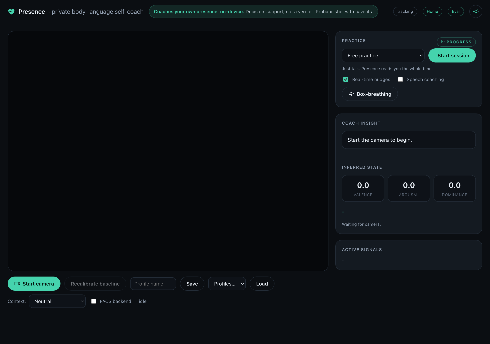
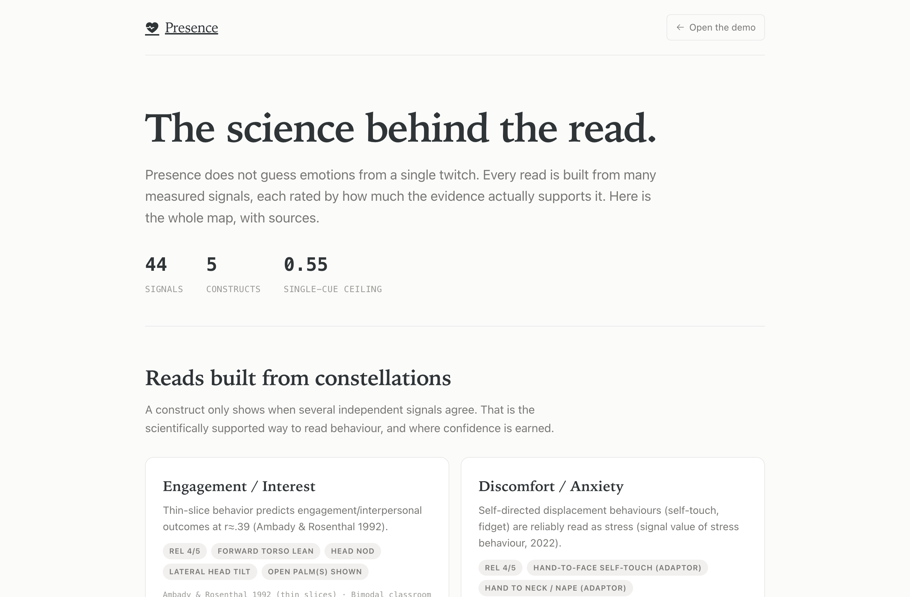
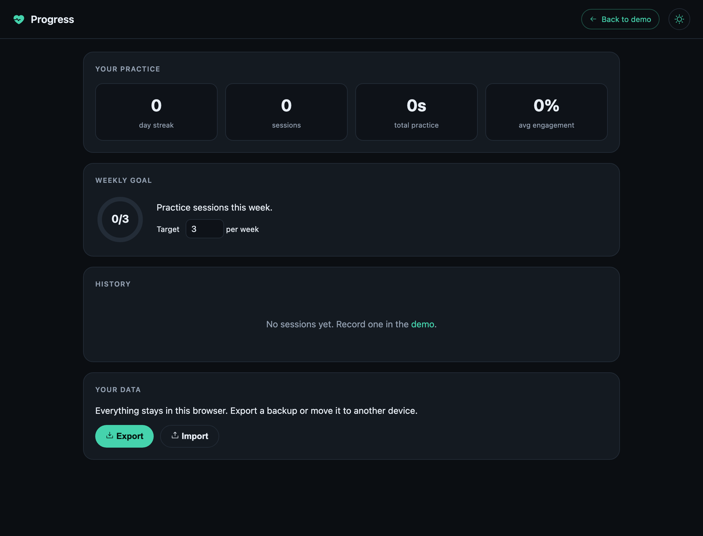
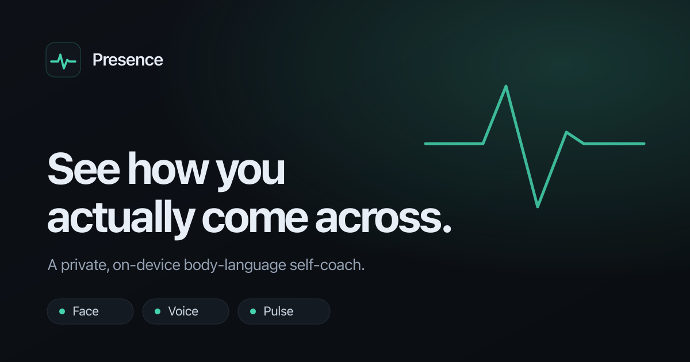

Presence
A private, on-device body-language self-coach. It reads your face, posture, hands, voice, and pulse in real time and coaches how you come across, without a single frame ever leaving your device.

What it does
Five independent signals, fused into confident reads, with the honesty baked in.
- Reads the face with a 478-point mesh and 52 action-unit blendshapes, mapped to the seven emotions as AU constellations.
- Reads the body and hands: full-body pose plus both hands for lean, openness, shrugs, and gesture.
- Reads the voice: pitch, energy, jitter and shimmer become dimensional arousal, dominance, and valence.
- Reads the pulse contactlessly (rPPG) from tiny color shifts in the skin, harder to fake than a posed face.
- Votes into evidence-backed constructs (engagement, rapport, confidence, discomfort) that only show when several cues agree.
- Coaches in real time, with session reports, progress trends, practice scenarios, nudges, and an on-device personal model you can train.
By design it never detects lies or hidden intent. The science does not support that, so every read is probabilistic and caveated. That honesty is the product.
How it came to be
It started as a research question and grew into a real, deployed product over about eleven days.
Gather and rate the science
Pulled the foundational papers, datasets, and books (Ekman, Barrett, DePaulo, AffectNet, IEMOCAP, Navarro), then rated every source on rigor and on how much its claims can actually be trusted.
Build an honest knowledge base
Distilled the research into a signals knowledge base grounded in Ekman's framework: each cue carries its evidence strength, reliability, caveats, and sources. Single cues are weak; constellations are strong.
Ship a live measurement engine
Wired MediaPipe face, pose, and hand tracking into the browser, then layered on voice prosody and contactless heart rate. Everything runs on-device at video rate.
Earn confidence, reduce noise
Replaced lonely single-cue reads with evidence-backed constructs, added quality gating, personal-baseline calibration, hysteresis, and abstention so the app is confident only when the evidence is.
Research the market, pick a lane
A deep scan of competitors, the state of the art, and the law (the EU AI Act now restricts emotion inference) pointed to self-coaching as the right, defensible product.
Build the coaching loop and launch
Added session reports, progress tracking, scenarios, nudges, and on-device model training, branded the whole app, made it an installable PWA, and deployed it live.
Skills I gained
One project that stretched across vision, audio, ML, product, and the science underneath.
Computer vision
- MediaPipe face / pose / hands
- Facial action units (FACS)
- Landmark geometry
- rPPG heart rate from video
- Real-time canvas overlays
Audio and signal processing
- Web Audio API
- Pitch autocorrelation
- Jitter, shimmer, spectral centroid
- Dimensional A/D/V from prosody
- Noise filtering and smoothing
Machine learning
- In-browser model training
- Logistic regression and softmax
- Standardization, holdout eval
- Confusion matrices, P/R/F1
- Signal fusion and calibration
Frontend and platform
- Vanilla JS modules
- IndexedDB and localStorage
- Service workers and PWA install
- Light/dark theming and i18n
- Canvas data visualization
Design and UX
- Design systems and brand locks
- Responsive layout
- Accessibility and reduced motion
- Editorial and minimalist styling
Product and research
- Literature synthesis
- Competitive and market analysis
- AI ethics and regulation (EU AI Act)
- Honest, defensible framing
- Knowledge graphs and Git hygiene
Inside the build
Real screens from the live app.



